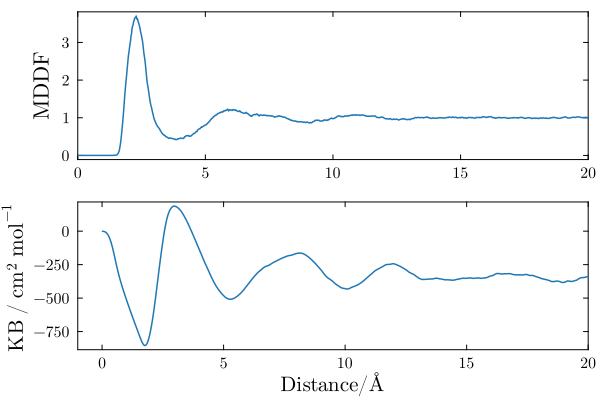
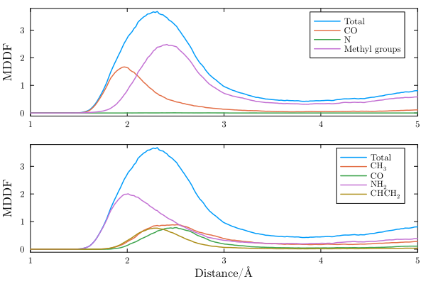

Polyacrylamide in DMDF
In this example we illustrate how the solvation structure of a polymer can be studied with ComplexMixtures.jl. The system is a 5-mer segment of polyacrylamide (PAE - capped with methyl groups), solvated with dimethylformamide (DMF). The system is interesting because of the different functional groups and polarities involved in the interactions of DMF with PAE. A snapshot of the system is shown below.

The structures of DMF and of the polyacrylamide segment are:
 |
 |
| DMF | Polyacrylamide |
Index
Data, packages, and execution
The files required to run this example are:
- equilibrated.pdb: The PDB file of the complete system.
- traj_Polyacry.dcd: Trajectory file. This is a 275Mb file, necessary for running from scratch the calculations.
To run the scripts, we suggest the following procedure:
- Create a directory, for example
example2. - Copy the required data files above to this directory.
- Launch
juliain that directory: activate the directory environment, and install the required packages. This launching Julia and executing:import Pkg Pkg.activate(".") Pkg.add(["ComplexMixtures", "PDBTools", "Plots", "LaTeXStrings", "EasyFit"]) exit() - Copy the code of each script in to a file, and execute with:
Alternativelly (and perhaps preferrably), copy line by line the content of the script into the Julia REPL, to follow each step of the calculation.julia -t auto script.jl
MDDF and KB integrals
Here we compute the minimum-distance distribution function, the Kirkwood-Buff integral, and the atomic contributions of the solvent to the density. This example illustrates the regular usage of ComplexMixtures, to compute the minimum distance distribution function, KB-integrals and group contributions.
Complete example code: click here!
import Pkg;
Pkg.activate(".");
using PDBTools
using ComplexMixtures
using Plots
using LaTeXStrings
using EasyFit: movavg
# The full trajectory file is available at:
# https://www.dropbox.com/scl/fi/jwafhgxaxuzsybw2y8txd/traj_Polyacry.dcd?rlkey=p4bn65m0pkuebpfm0hf158cdm&dl=0
trajectory_file = "./traj_Polyacry.dcd"
# Load a PDB file of the system
system = readPDB("./equilibrated.pdb")
# Select the atoms corresponding DMF molecules
dmf = select(system, "resname DMF")
# Select the atoms corresponding to the Poly-acrylamide
acr = select(system, "resname FACR or resname ACR or resname LACR")
# Set the solute and the solvent selections for ComplexMixtures
solute = AtomSelection(acr, nmols=1)
solvent = AtomSelection(dmf, natomspermol=12)
# Set the trajectory structure
trajectory = Trajectory(trajectory_file, solute, solvent)
# Use a large dbulk distance for better KB convergence
options = Options(bulk_range=(20.0, 25.0))
# Compute the mddf and associated properties
results = mddf(trajectory, options)
# Save results to file for later use
save(results, "./mddf.json")
println("Results saved to ./mddf.json file")
# Plot the MDDF and KB integrals
plot_font = "Computer Modern"
default(
fontfamily=plot_font,
linewidth=1.5,
framestyle=:box,
label=nothing,
grid=false,
palette=:tab10
)
scalefontsizes();
scalefontsizes(1.3);
# Plot the MDDF of DMF relative to PolyACR and its corresponding KB integral
plot(layout=(2, 1))
plot!(
results.d,
movavg(results.mddf, n=9).x, # Smooth example with a running average
ylabel="MDDF",
xlims=(0, 20),
subplot=1,
)
# Plot the KB integral
plot!(
results.d,
movavg(results.kb, n=9).x, # smooth kb
xlabel=L"\textrm{Distance / \AA}",
ylabel=L"\textrm{KB~/~cm^2~mol^{-1}}",
xlim=(-1, 20),
subplot=2
)
savefig("./mddf_kb.png")
println("Plot saved to mddf_kb.png")Output
The distribution of DMF molecules around polyacrylamide is shown below. There is a peak at ~2.5Angs, indicating favorable non-specific interactions between the solvent molecules and the polymer. The peak is followed by a dip and diffuse peaks at higher distances. Thus, the DMF molecules are structured around the polymer, but essentially only in the first solvation shell.

The KB integral in a bicomponent mixture converges to the (negative of the) apparent molar volume of the solute. It is negative, indicating that the accumulation of DMF in the first solvation shell of the polymer is not enough to compensate the excluded volume of the solute.
Group contributions
The MDDF can be decomposed into the contributions of the DMF chemical groups, and on the polyacrylamide chemical groups. In the first panel below we show the contributions of the DMF chemical groups to the distribution function.
Complete example code: click here!
import Pkg;
Pkg.activate(".");
using ComplexMixtures
using Plots
using LaTeXStrings
using EasyFit: movavg
# Some default settings for the plots
plot_font = "Computer Modern"
Plots.default(
fontfamily=plot_font,
linewidth=1.5,
framestyle=:box,
label=nothing,
grid=false,
)
# Load previusly saved results, computed in the previous script
results = load("./mddf.json")
# Plot with two subplots
plot(layout=(2, 1))
# Plot the total mddf
plot!(
results.d,
movavg(results.mddf, n=10).x, # Smooth example with a running average
label="Total",
subplot=1
)
# Plot DMF group contributions to the MDDF. We use a named tuple where
# the keys are the group names, and the values are the atom names of the group
groups = (
"CO" => ["C", "O"], # carbonyl
"N" => ["N"],
"Methyl groups" => ["CC", "CT", "HC1", "HC2", "HC3", "HT1", "HT2", "HT3"],
)
for (group_label, group_atoms) in groups
# Retrieve the contributions of the atoms of this group
group_contrib = contributions(results, SolventGroup(group_atoms))
# Plot the contributions of this groups, with the appropriate label
plot!(
results.d,
movavg(group_contrib, n=10).x,
label=group_label,
subplot=1
)
end
# Adjust scale and label of axis
plot!(xlim=(1, 5), ylabel="MDDF", subplot=1)
#
# Plot ACR group contributions to the MDDF. This is an interesting case,
# as the groups are repeated along the polymer chain
#
groups = (
"CH_3" => ["CF", "HF1", "HF2", "HF3", "CL", "HL1", "HL2", "HL3"], # terminal methyles
"CO" => ["OE1", "CD"], # carbonyl
"NH_2" => ["NE2", "HE22", "HE21"], # amine
"CHCH_2" => ["C", "H2", "H1", "CA", "HA"], # backbone
)
# Plot total mddf
plot!(
results.d,
movavg(results.mddf, n=10).x, # Smooth example with a running average
label="Total",
subplot=2
)
# Plot group contributions
for (group_name, atom_names) in groups
group_contrib = contributions(results, SoluteGroup(atom_names))
plot!(
results.d,
movavg(group_contrib, n=10).x,
label=latexstring("\\textrm{$group_name}"),
subplot=2
)
end
# Adjust scale and label of axis
plot!(
xlim=(1, 5),
xlabel=L"\textrm{Distance / \AA}",
ylabel="MDDF", subplot=2
)
# Save figure
savefig("./mddf_groups.png")
println("Created figure file: ./mddf_groups.png")Output
The decomposition reveals that specific interactions peaking at distances slightly smaller than 2$\AA$ exist between the polymer and the carbonyl group of DMF. Thus, there hydrogen bonds between the polymer and this group, which dominate the interactions between the solute and the solvent at short distances. The non-specific interactions peak at 2.5Angs and are composed of contributions of all DMF chemical groups, but particularly of the methyl groups.

The decomposition of the same MDDF in the contributions of the chemical groups of the polymer is clearly associated to the DMF contributions. The specific, hydrogen-bonding, interactions, are associated to the polymer amine groups. The amine groups also contribute to the non-specific interactions at greater distances, but these are a sum of the contributions of all polymer groups, polar or aliphatic.
2D density map
We can decompose the MDDF into the contributions of each portion of the polymer chain. The map below displays the contributions of each chemical group of the polymer, now split into the mers of the polymer, to the MDDF.
Complete example code: click here!
import Pkg;
Pkg.activate(".");
using ComplexMixtures
using Plots
using EasyFit: movavg
using LaTeXStrings
using PDBTools
# Here we will produce a 2D plot of group contributions, splitting the
# contributions of each mer of the polymer into its chemical groups
# Chemical groups of the polymer monomers, defined by the atom types:
groups = (
"CH_3" => ["CF", "HF1", "HF2", "HF3"], # methyles
"CO" => ["OE1", "CD"], # carbonyl
"NH_2" => ["NE2", "HE22", "HE21"], # amine
"CHCH_2" => ["C", "H2", "H1", "CA", "HA"], # backbone
"CH_3" => ["CL", "HL1", "HL2", "HL3"], # terminal methyles
)
system = readPDB("./equilibrated.pdb")
acr = select(system, "resname FACR or resname ACR or resname LACR")
results = load("./mddf.json")
# Here we split the polymer in residues, to extract the contribution of
# each chemical group of each polymer mer independently
group_contribs = Vector{Float64}[]
labels = LaTeXString[]
for (imer, mer) in enumerate(eachresidue(acr))
for (group_label, group_atoms) in groups
# only first residue has a terminal CH3
if imer != 1 && group_label == "CH_3"
continue
end
# only last residue has a terminal CH3
if imer != 5 && group_label == "CH_3"
continue
end
# Filter the atoms of this mer that belong to the group
mer_group_atoms = filter(at -> name(at) in group_atoms, mer)
# Retrive the contribution of this mer atoms to the MDDF
atoms_contrib = contributions(results, SoluteGroup(mer_group_atoms))
# Smooth the contributions
atoms_contrib = movavg(atoms_contrib; n=10).x
# Add contributions to the group contributions list
push!(group_contribs, atoms_contrib)
# Push label to label list, using LaTeX formatting
push!(labels, latexstring("\\textrm{$group_label}"))
end
end
# Convert the group contributions to a matrix
group_contribs = stack(group_contribs)
# Find the indices of the limits of the map we want
idmin = findfirst(d -> d > 1.5, results.d)
idmax = findfirst(d -> d > 3.2, results.d)
# Plot contour map
Plots.default(fontfamily="Computer Modern")
contourf(
1:length(labels),
results.d[idmin:idmax],
group_contribs[idmin:idmax, :],
color=cgrad(:tempo), linewidth=1, linecolor=:black,
colorbar=:none, levels=10,
xlabel="Group", ylabel=L"r/\AA", xrotation=60,
xticks=(1:length(labels), labels),
margin=5Plots.Measures.mm # adjust margin
)
savefig("./map2D_acr.png")
println("Plot saved to map2D_acr.png")Output
The terminal methyl groups interact strongly with DMF, and strong local density augmentations are visible in particular on the amine groups. These occur at less than 2.0Angs and are characteristic of hydrogen-bond interactions. Interestingly, the DMF molecules are excluded from the aliphatic and carbonyl groups of the polymer, relative to the other groups.
Finally, it is noticeable that the central mer is more weakly solvated by DMF than the mers approaching the extremes of the polymer chain. This is likely a result of the partial folding of the polymer, that protects that central mers from the solvent in a fraction of the polymer configurations.
References
Molecules built with JSME: B. Bienfait and P. Ertl, JSME: a free molecule editor in JavaScript, Journal of Cheminformatics 5:24 (2013) http://biomodel.uah.es/en/DIY/JSME/draw.en.htm
The system was built with Packmol.
The simulations were perfomed with NAMD, with CHARMM36 parameters.